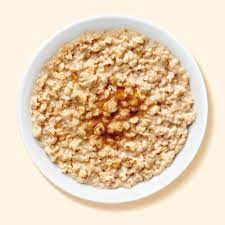

Homemade Oatmeal

Description
It's delicious and tasty oatmeal with brown sugar and maple with some peanut butter to make it more creamy
Ingredients
- Peanut Butter
- Oats
- Maple Syrup
- Brown Sugar
- Milk
Steps
- Mix the oats with the sugar while dry, then put milk in
- Put it in microwave for 1 to 2 minutes
- Then put the rest of ingredients in til desired amount